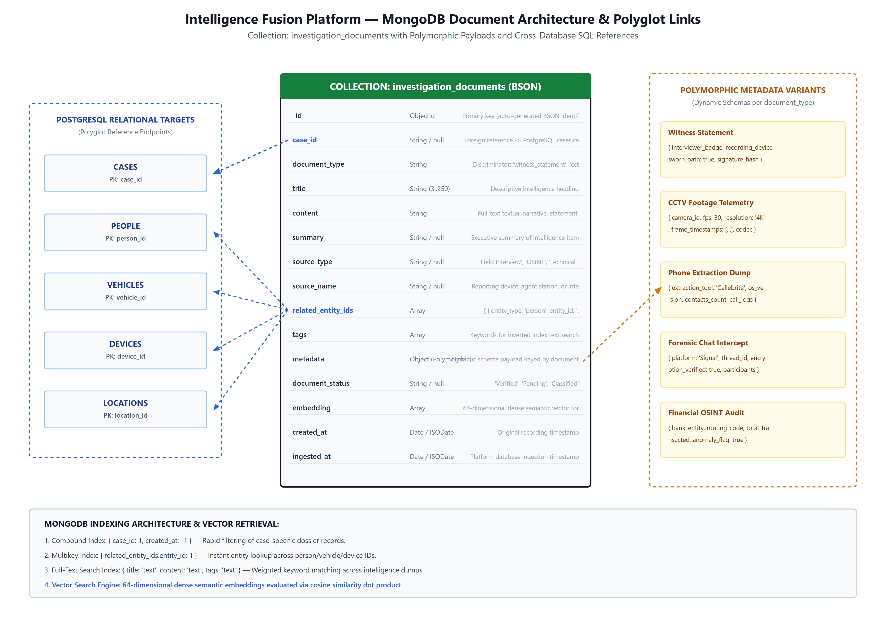

While relational databases provide strong consistency for structured records, criminal investigations routinely generate highly polymorphic, unstructured intelligence documents: witness statements, CCTV telemetry dumps, forensic mobile phone extractions, and intercepted encrypted chat transcripts. Forcing these documents into a relational model would require either sparse tables with excessive null values or complicated table inheritance structures.
We implemented MongoDB 7.0 as a document store to manage the investigation_documents collection alongside our relational PostgreSQL database. Dotted cross-database references (e.g. case_id and related_entity_ids) establish clear polyglot links back to primary keys in our SQL tables.

To prevent collection degradation while preserving flexibility, we enforce strict structural validation at the database level via MongoDB's $jsonSchema validator (configured in database/mongodb/collection-schema.json).
{{
"$jsonSchema": {{
"bsonType": "object",
"required": ["title", "document_type", "content", "created_at"],
"properties": {{
"case_id": {{
"type": ["string", "null"],
"description": "Relational foreign key referencing PostgreSQL cases.case_id"
}},
"document_type": {{
"type": "string",
"description": "Discriminator key: 'witness_statement', 'cctv_log', 'phone_dump', 'chat_export'"
}},
"title": {{
"type": "string",
"minLength": 3,
"maxLength": 250
}},
"content": {{
"type": "string",
"description": "Full-text textual narrative, statement, or raw intercept dump"
}},
"related_entity_ids": {{
"type": "array",
"items": {{
"type": "object",
"required": ["entity_type", "entity_id"],
"properties": {{
"entity_type": {{ "type": "string" }},
"entity_id": {{ "type": "string" }}
}}
}}
}},
"embedding": {{
"type": "array",
"items": {{ "type": "number" }},
"description": "64-dimensional dense semantic embedding vector for vector similarity search"
}}
}}
}}
}}
In database/mongodb/indexes.js, we established four indexing structures to optimize distinct operational query patterns:
{{ case_id: 1, created_at: -1 }} enables fast temporal sorting of documents within a specific case.{{ "related_entity_ids.entity_id": 1 }} supports rapid entity-resolution queries across embedded object arrays.{{ title: "text", content: "text", tags: "text" }} with weights {{ title: 10, content: 5, tags: 3 }} for text search.embedding field, allowing semantic retrieval without relying on exact keyword matching.
2026-11-02 11:06:29,392 [INFO] app.db.mongo: Connecting to MongoDB at mongodb://localhost:27017/intelligence_fusion
2026-11-02 11:06:29,401 [INFO] app.db.mongo: Applying $jsonSchema collection validator to 'investigation_documents'
2026-11-02 11:06:29,415 [INFO] app.db.mongo: Building compound index { case_id: 1, created_at: -1 } -> OK
2026-11-02 11:06:29,428 [INFO] app.db.mongo: Building multikey index { related_entity_ids.entity_id: 1 } -> OK
2026-11-02 11:06:29,442 [INFO] app.db.mongo: Building text index { title: 'text', content: 'text', tags: 'text' } -> OK
2026-11-02 11:06:29,470 [INFO] app.seed: Ingested 26 polymorphic sample documents with 64-dim embeddings.